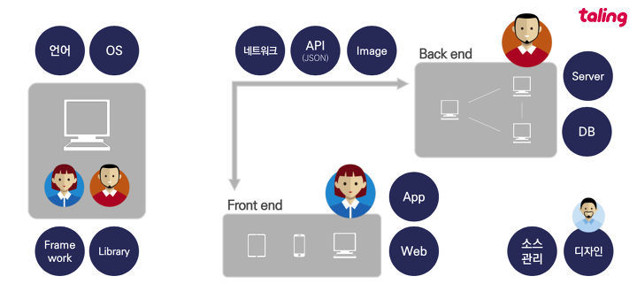

WWW(월드와이드웹)는 일반적으로 웹이라고 하며 간단히 W3라고도 부른다. '세계 규모의 거미집' 또는 '거미집 모양의 망'이라는 뜻으로, 하이퍼텍스트(hypertext)라는 기능에 의해 인터넷상에 분산되어 존재하는 온갖 종류의 정보를 통일된 방법으로 찾아볼 수 있게 하는 광역 정보서비스다. 웹 이전의 인터넷은 초기의 명령어 기반 구조를 가지고 있었으며, 하드웨어와 OS에 따라 다른 명령어를 써야 했는데, 웹에서는 어떠한 종류의 컴퓨터를 사용하여도 한 가지 종류의 표준 사용자 환경으로 조작이 가능하도록 하였다. 즉, HTTP라는 프로토콜을 통해 일반데이터ㆍ이미지ㆍ멀티미디어 등 모든 데이터를 통합적으로 전송하는 것이 이 웹이다. 하이퍼텍스트를 기반으로 이루어져 있어 문서 활용에 엄청난 편리성을 제공 WWW는 인터넷상에서 제공되는 많은 서비스의 통합된 접속도구의 역할을 하여 기존 프로토콜과 서비스를 제공하며, 인터넷상에서 생겨나는 가상의 조직체나 공동체에서 능동적 참여를 꾀할 수 있게 한다. 또 인터넷에 존재하는 일반 텍스트 형태의 문서, 그림, 음성, 그리고 동화상 등의 각종 자료들을 인터넷 주소(URL)를 이용해서 하나의 문서 형태로 통합적으로 관리ㆍ제공해 주는 역할을 한다. 이 WWW에 관련된 기술은 월드 와이드 웹 컨소시엄(W3C)이 개발하고 있으며, W3C는 HTML, HTTP 등의 표준화 등도 진행하고 있다.
